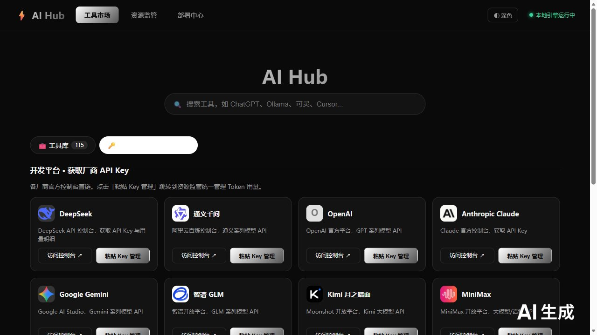
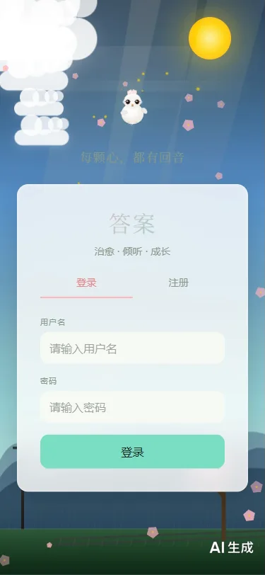
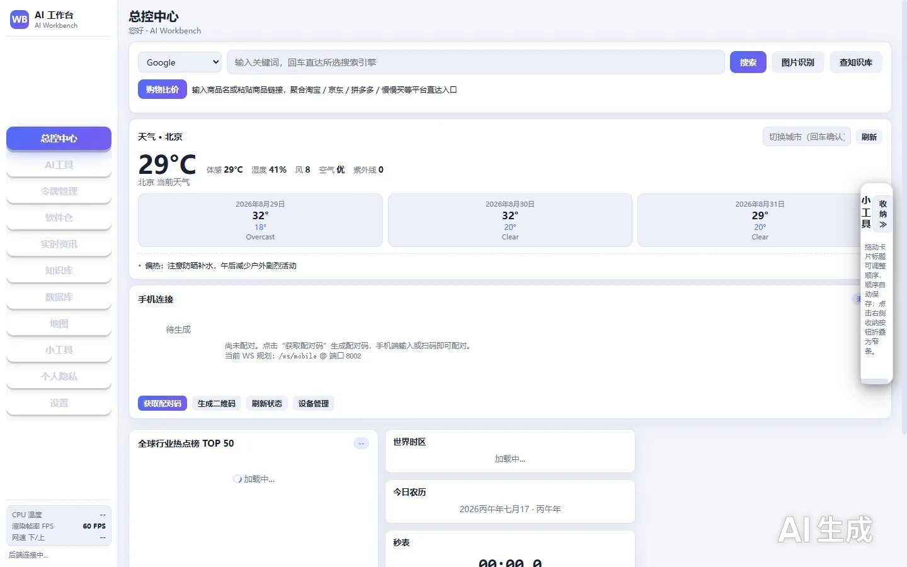
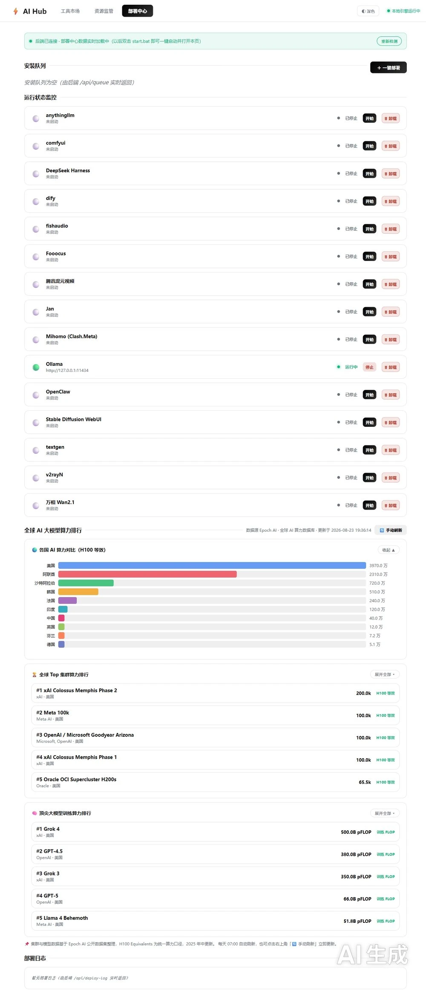
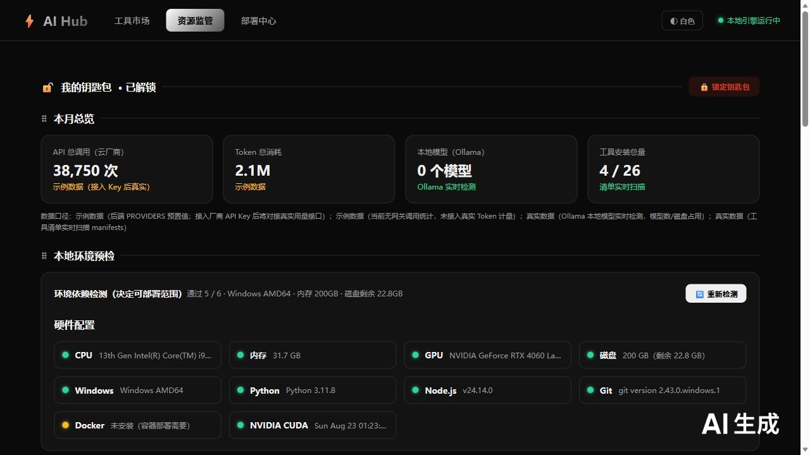

衣件通
Wardrobe Assistant
01
Portfolio
项目作品集
微信小程序、Android 应用与 AI 平台。
好友检测
Friend Check
02
LINGO
Ad Blocker
03

AI hub AI Platform 04
答案
Answer · Healing Q&A
05

人工智能-父母体验
AI Parenting Game
06

AI Workbench AI Personal Workbench 07
×
工具市场 · 工具库与 API 钥匙包
部署中心 · 云部署 / AI 集群部署与算力排行
资源监管 · API 消耗 / 模型数 / 硬件概览
AI hub · 界面截图


当前分类暂无项目。